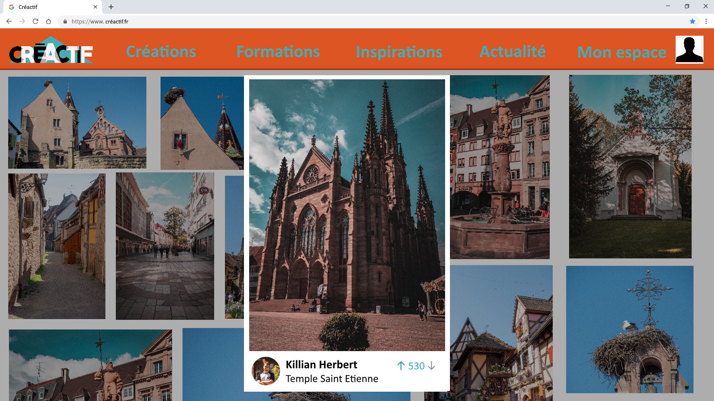
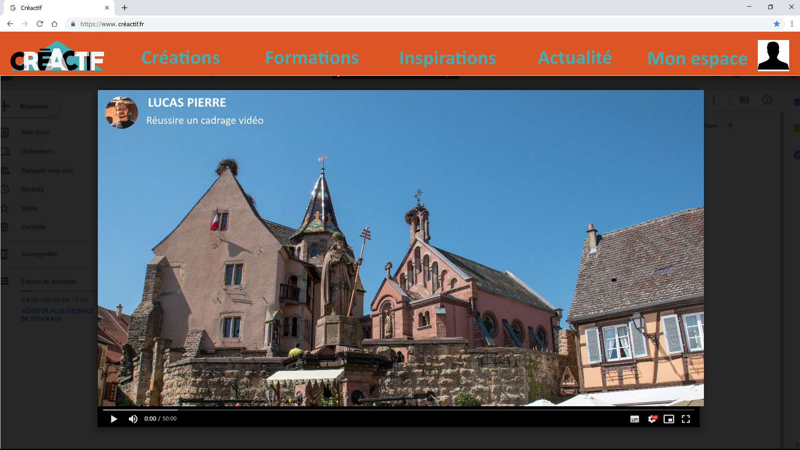
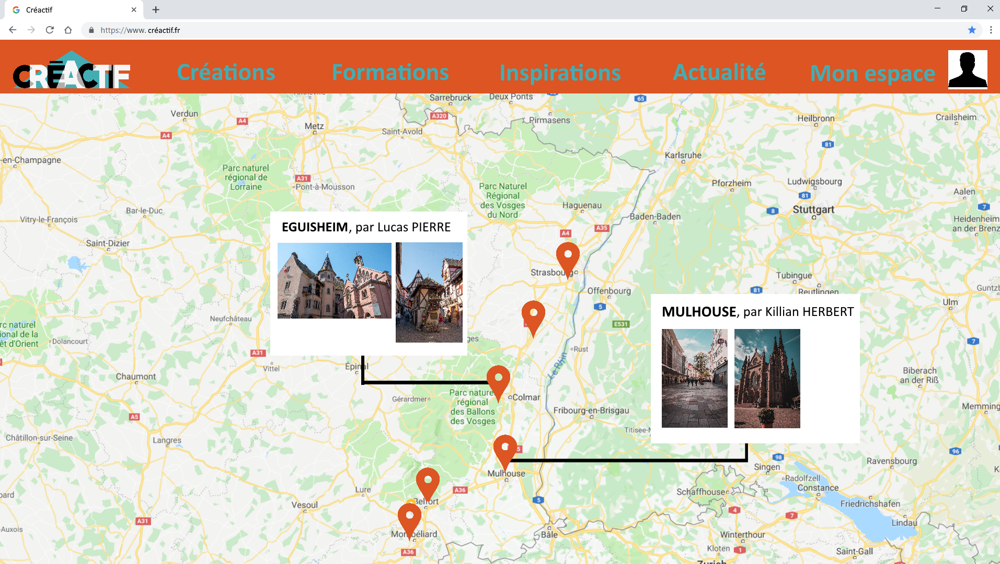
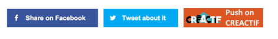

Creactif est en cours de développement par l'agence Sensio. La plateforme aura pour but de faciliter le travail de tout les créatifs en proposant : une plateforme d'échange de création, une carte intéractive de lieux intéressants, un blog d'actualités et des vidéos conseils.
Les créatifs : vidéastes, photographes, graphistes, designer... trouveront tout les élements dont ils auront besoins, et ce condencé dans une seule plateforme !
Un espace personalisable pour partager ses créations vidéo, photo, design, musique... C'est les utilisateurs qui pourront mettres en avant leurs contenus préféré grâce à un système de vote. Les contenus jugés moins intéressants seront relayés au second plan. A la différence d'autre plateforme de partage de création, ici, ce n'est pas un algorithme qui décide de ce qui est intéressant. Ce sont les utilisateurs qui contribuent à la popularité des créations, c'est un système moins injuste.
Fort de notre éxperience de créatif, nous proposeront des formations payante et gratuite pour partager notre passion et améliorer le contenu de notre communauté.
Après avoir passé des après midi sur diverses sites pour se renseigner sur des lieux insolites nous avons observé la nécessité de créer une carte interactive et participative. Cette carte pourrait répertorier les lieux les plus intéressant créativement et chacun pourrait apporter sa contribution.
Les sources sont multiples sur Internet. Il faut s'aboner de multiples fils d'actualités pour suivre les nouveautés d'un monde du multimédia qui avance de plus en plus vite. Créactif integrera donc une catégorie "Actualités" pour regrouper les meilleurs sources. Encore une fois, la communauté sera au centre de la diversité du contenu, les utilisateurs pourront mettre en valeure les flux médiatiques qu'ils préfèrent, ou même écrire leurs propres articles.
